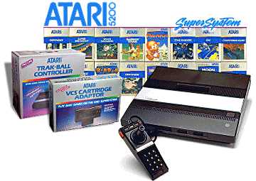
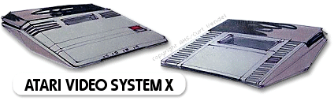
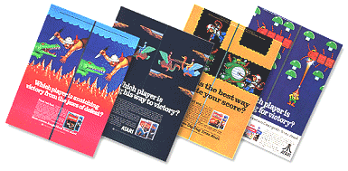

|

1982 - The 5200 was devised to
once again crown Atari as the leader in the home video
games market. By now, the 2600 was up against a lot
of competition from Coleco Vision and others, and Atari
wanted to launch an updated video game console with
superior technical abilities, and to a lesser extent,
try to quell the rising tide of third-parties infringing
on their copyright, as had happened with the ColecoVision
2600 cartridge adapter (which enabled you to play 2600
games on the ColecoVision console) and some foreign 2600
video cartridge copying devices.
Development of the 5200 began
at Atari in 1981, and a system called the 3200-System X
was being prototyped and tested. Trouble with this
project, namely difficult programming, led Atari to
utilise their home computer technology to speed-up the
project, and this is the basis of the technology found
inside the final System X. With the technology from
the computer line used inside the new system, familiarity
ensured programming was less complicated and titles could
be easily produced.

Project PAM (Personal Arcade machine)
(info byte)
Finally, the Video System X
was named the 5200 and launched with much fanfare in 1982.
It was a big event, this was Atari's second video game
system, (the 2600 being the first, launched way back in
late 1977) and Atari's dominant position relied upon the
5200 being warmly received by the gaming public. The
packaging was bold and bright, and the box was large -
inside was the most advanced home video game system ever
produced, and Atari wanted you to notice it in the stores.
The new 5200 design was made
to be noticed, even the trackball controller available
separately was about the same size as the 5200 itself!
Big meant better in the early eighties, and the 5200 was
no exception. The joysticks were of an advanced
design, incorporating a full 360° speed sensitive yoke,
and a keypad for more advanced gaming options, which also
included the Start, Reset and Pause buttons so you didn't
have to touch the unit from the moment a game had been
inserted. You could even plug-in up to 4 joysticks,
just like the Atari 400 and 800 computers.
Everything seemed to sound
perfect on paper, and the gaming magazines were excited
about the prospect of the 5200. Unfortunately, the
5200 was a system that wouldn't get the positive reaction
Atari had hoped for. The 5200 had a number of
initial flaws, and this could be due to the rushed nature
of the System X, especially since the original 3200 had to
be scrapped, and a new solution needed to be found quickly
to rectify the project.
And it wasn't just one chink
in the 5200 armour that dogged its launch. The 5200
Joysticks were uncomfortable to use for a prolonged
period, and they tended to break easily. The system
which had been originally planned to be backwardly
compatible to the 2600, wasn't. The 5200's main
rival, the CBS ColecoVision, had a 2600 compatible module
in the stores before Atari had, and this in itself ensured
further bad press for the new system. But new
hardware needs new software, and the 5200 library was just
a who's-who of 2600 remakes.

Although the remakes were much
better (well, some of them) on the 5200, it was hard to justify the
purchase just to play "updated" Atari classics.
Atari even advertised some 2600 and 5200 titles in the
same print promotion.
With all these problems
surfacing, Atari made some fixes to the 5200 hardware.
A new 2-Port version of the machine was launched, and this
could utilise the new 2600 VCS cartridge adapter (CX-55),
allowing the majority of 2600 titles to run on the 5200
(The original 4-Port 5200 required an Atari Service Centre
upgrade, which at least, was free of charge!). Some
5200 only titles were released, and the joysticks were
under almost constant revision. In fact, when the
5200 was eventually cancelled in 1984, Atari had gone
through 9 different revisions of the 5200 Joystick!
Retailers weren't especially
enthusiastic about the 5200, and sales were an
up-hill-battle. The market was now flooded with
numerous video game systems and multiple versions of
Pac-man and Space Invaders, the industry would soon
implode as consumers took a break from video gaming (and
for good reason), and the 5200's fate was partially
decided by economic conditions as it was by Atari itself.
With losses looming at Atari
and Warner unhappy with a string of mistakes, engineers
were egger not to repeat the fiasco that was the 5200, and
prove again that Atari was the leading video games
company...
The 7800 was coming...
|